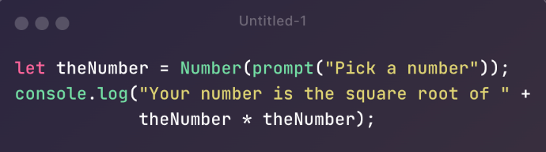
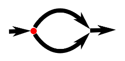
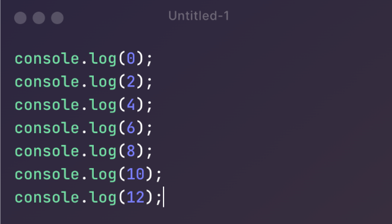
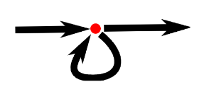
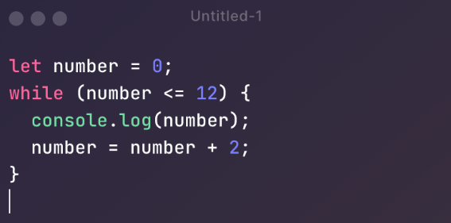
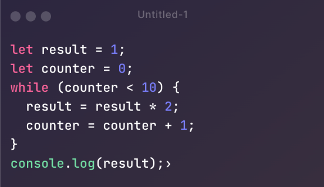

Values
Numbers Values of the number type are 13
Arithmetic
100 + 4 * 11 = 144 The + and * symbols are called operators
The / operator has the same precedence as *. Likewise, + and - have the same precedence.
When multiple operators with the same precedence appear next to each other, as in 1 - 2 + 1, they are applied left to right: (1 - 2) + 1.
Strings
The next basic data type is the string. Strings are used to represent text. They are written by enclosing their content in quotes.
`Down on the sea`, "Lie on the ocean", 'Float on the ocean'
You can use single quotes, double quotes, or backticks to mark strings, as long as the quotes at the start and the end of the string match.
Strings cannot be divided, multiplied, or subtracted. The + operator can be used on them, not to add, but to concatenate—to glue two strings together. The following line will produce the string "concatenate":
"con" + "cat" + "e" + "nate"
Backtick-quoted strings, usually called template literals, can do a few more tricks. Apart from being able to span lines, they can also embed other values.
`half of 100 is ${100 / 2}`
Unary operators
One example is the typeof operator, which produces a string value naming the type of the value you give it
console.log(typeof 4.5)
// → number
console.log(typeof "x")
// → string
Boolean Values
It is often useful to have a value that distinguishes between only two possibilities, like “yes” and “no” or “on” and “off”. For this purpose, JavaScript has a Boolean type, which has just two values, true and false, written as those words.
Comparison
console.log(3 > 2)
// → true
console.log(3 < 2)
// → false
console.log("Garnet" != "Ruby")
// → true
console.log("Pearl" == "Amethyst")
// → false
Logical Operators
JavaScript supports three logical operators: and, or, and not. These can be used to “reason” about Booleans.
The && operator represents logical and. It is a binary operator, and its result is true only if both the values given to it are true.
console.log(true && false)
// → false
console.log(true && true)
// → true
The || operator denotes logical or. It produces true if either of the values given to it is true.
console.log(false || true)
// → true
console.log(false || false)
// → false
Not is written as an exclamation mark (!). It is a unary operator that flips the value given to it—!true produces false and !false gives true.
The last logical operator we will look at is not unary, not binary, but ternary, operating on three values. It is written with a question mark and a colon, like this:
console.log(true ? 1 : 2);
// → 1
console.log(false ? 1 : 2);
// → 2
Short-circuiting of Logical Operators
The logical operators && and || handle values of different types in a peculiar way. They will convert the value on their left side to Boolean type in order to decide what to do, but depending on the operator and the result of that conversion, they will return either the original left-hand value or the right-hand value.
console.log(null || "user")
// → user
console.log("Agnes" || "user")
// → Agnes
The rules for converting strings and numbers to Boolean values state that 0, NaN, and the empty string ("") count as false, while all the other values count as true.
The ?? operator resembles ||, but returns the value on the right only if the one on the left is null or undefined, not if it is some other value that can be converted to false. Often, this is preferable to the behavior of ||.
console.log(0 || 100);
// → 100
console.log(0 ?? 100);
// → 0
console.log(null ?? 100);
// → 100
Intro to Functions
Functions are one of the most central tools in JavaScript programming. The concept of wrapping a piece of program in a value has many uses. It gives us a way to structure larger programs, to reduce repetition, to associate names with subprograms, and to isolate these subprograms from each other.
const square = function(x) {
return x * x;
};
console.log(square(12));
// → 144
Summary
We looked at four types of JavaScript values: numbers, strings, Booleans, and undefined values.
You can combine and transform values with operators. We saw binary operators for arithmetic (+, -, *, /, and %), string concatenation (+), comparison (==, !=, ===, !==, <, >, <=, >=), and logic (&&, ||, ??), as well as several unary operators (- to negate a number, ! to negate logically, and typeof to find a value’s type) and a ternary operator (?:) to pick one of two values based on a third value.
Intro to REGEX
Este regex, /(\+|-\x||\/)/, es una expresión regular que coincide con uno de los siguientes caracteres: +, -, x, o /. Permíteme explicar cada parte de la expresión regular:
Switch
The switch statement evaluates an expression, matching the expression's value against a series of case clauses, and executes statements after the first case clause with a matching value, until a break statement is encountered. The default clause of a switch statement will be jumped to if no case matches the expression's value.
Bindings
How does a program keep an internal state? How does it remember things? We have seen how to produce new values from old values, but this does not change the old values, and the new value must be used immediately or it will dissipate again. To catch and hold values, JavaScript provides a thing called a binding, or variable:
let op = 5 * 5;The special word (keyword) let indicates that this sentence is going to define a binding. It is followed by the name of the binding and, if we want to immediately give it a value, by an = operator and an expression.
After a binding has been defined, its name can be used as an expression. The value of such an expression is the value the binding currently holds. Here’s an example:
let ten = 10;
console.log(ten * ten);When a binding points at a value, that does not mean it is tied to that value forever. The = operator can be used at any time on existing bindings to disconnect them from their current value and have them point to a new one:
let mood = "light";
console.log(mood);
mood = "dark";
console.log(mood);
let luigisDebt = 140;
luigisDebt = luigisDebt - 35;
console.log(luigisDebt);Control Flow
When your program contains more than one statement, the statements are executed as though they were a story, from top to bottom. For example, the following program has two statements. The first asks the user for a number, and the second, which is executed after the first, shows the square of that number:
Not all programs are straight roads. We may, for example, want to create a branching road where the program takes the proper branch based on the situation at hand. This is called conditional execution.
Conditional execution is created with the if keyword in JavaScript. In the simple case, we want some code to be executed if, and only if, a certain condition holds.
While Loops
Consider a program that outputs all even numbers from 0 to 12. One way to write this is as follows:
That works, but the idea of writing a program is to make something less work, not more. If we needed all even numbers less than 1,000, this approach would be unworkable.
 As an example that actually does something useful, we can now write a program that calculates and shows the value of 210 (2 to the 10th power).
